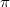

exercise title Un dibujo de Escher /title requires formatlatex package[T1]fontenc package[latin1]inputenc package[spanish]babel packageevenmoreverb packagegraphicx /requires statement text Observa el dibujo de M. C. Escher (1898--1972) que aparece en la figura latexrefcachivache titulado
Wentelteefje.
No pretendemos en este ejercicio imitar la maestría de Escher al dibujar sus
animalillos-cachivache, como él los llama, pero sí el texto que sirve de marco para la acción de los mismos. Escribe un programa que lea los datos de un fichero de texto y los escriba en la pantalla siguiendo un patrón como el que muestra el dibujo de Escher. Ten en cuenta que hay varios parámetros que considerar a la hora de definir el patrón. /text hintpisParametros text Los diversos parámetros que pueden modificar el patrón de escritura son: el espacio en blanco inicial para la primera línea; la anchura total de las líneas; el número de líneas en blanco hasta que aparece la primera línea a la izquierda; y el número de caracteres en los que decrece o aumenta cada 2.2 Piezas y parámetros 2 VISIÓN PANORÁMICA CON EJEMPLOS línea con respecto a /text /hint exampleeje text Aquí podemos ver una que contiene los 123
la anterior. ejecución del programa que toma como entrada un fichero primeros dígitos del número : 31415926535897932 384626433832795 0288419716939 93751058209 944592307 0628620 899862 80348 25342117 067 9821480865 1 328230664709 /text /example /statement solutionsolPascal text 74 8164 development Sin solución en Pascal /development /text /solution /exercise
 0.6
0.6 #
#